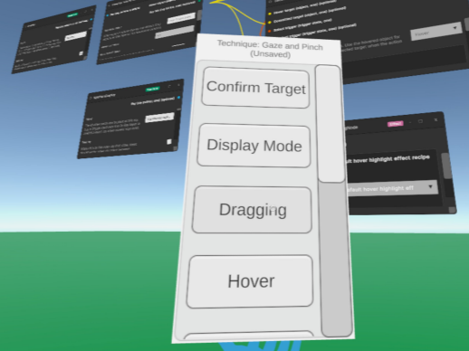

Academic Project
Master Thesis - GRIP-TK Toolkit
GRIP-TK is a master thesis toolkit for creating and evaluating XR interaction techniques through a node-graph workflow. It brings interaction logic, runtime behavior, logging, and evaluation setup into one system, reducing the amount of repeated work normally needed when building XR experiments.
View Project